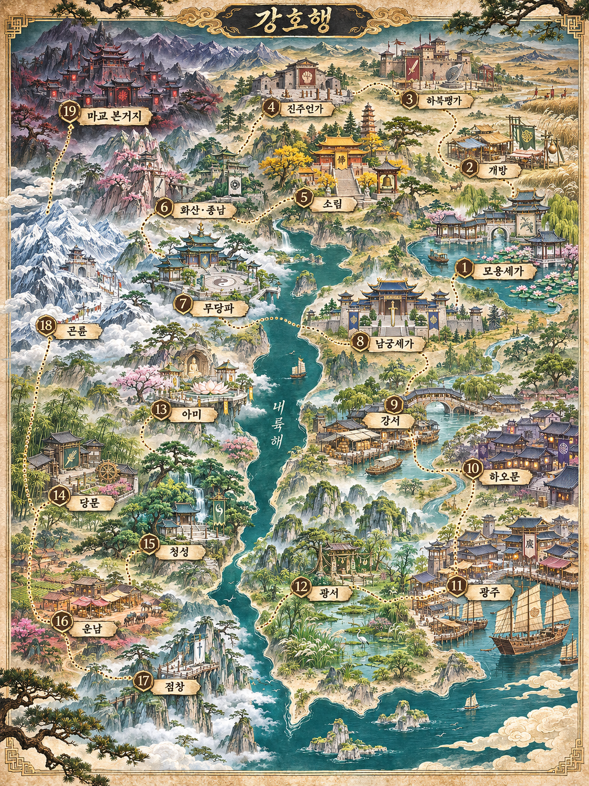

<!doctype html>
<html lang="ko"><meta charset="utf-8"><meta name="viewport" content="width=device-width,initial-scale=1"><title>강호행 세계지도</title>
<style>body{margin:0;background:#182b30;color:#f4e5bc;font-family:system-ui,sans-serif}header{padding:18px;text-align:center}h1{font-size:22px;margin:0 0 10px}a{color:#f4e5bc}main{text-align:center;padding:0 12px 24px}img{display:block;width:100%;max-width:1086px;height:auto;margin:auto}p{font-size:14px}</style>
<header><h1>강호행 세계지도</h1><a href="gangho-world-map.png" download>지도 원본 다운로드</a><p>이미지를 누르면 원본 크기로 볼 수 있습니다.</p></header><main><a href="gangho-world-map.png"></a></main></html>